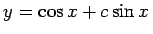

| (9.1) |
Ist diese Gleichung nach y(n)(x) aufgelöst, dann hat man die explizite Form einer gewöhnlichen Differentialgleichung n-ter Ordnung.
| Beispiel |
|
Die Differentialgleichung hat die allgemeine Lösung . Für c=0 ergibt sich die partikuläre Lösung . |